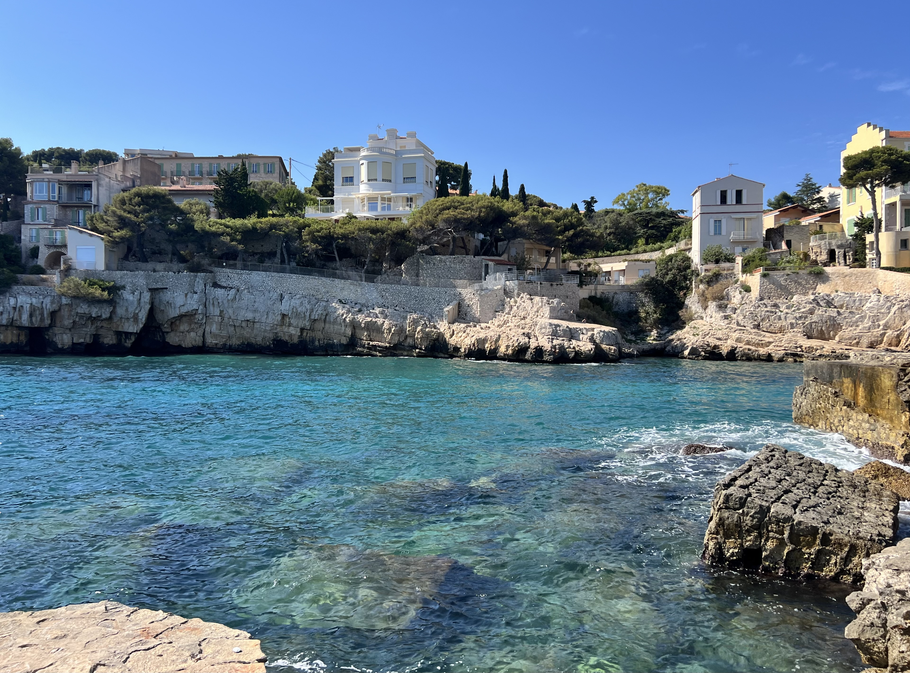
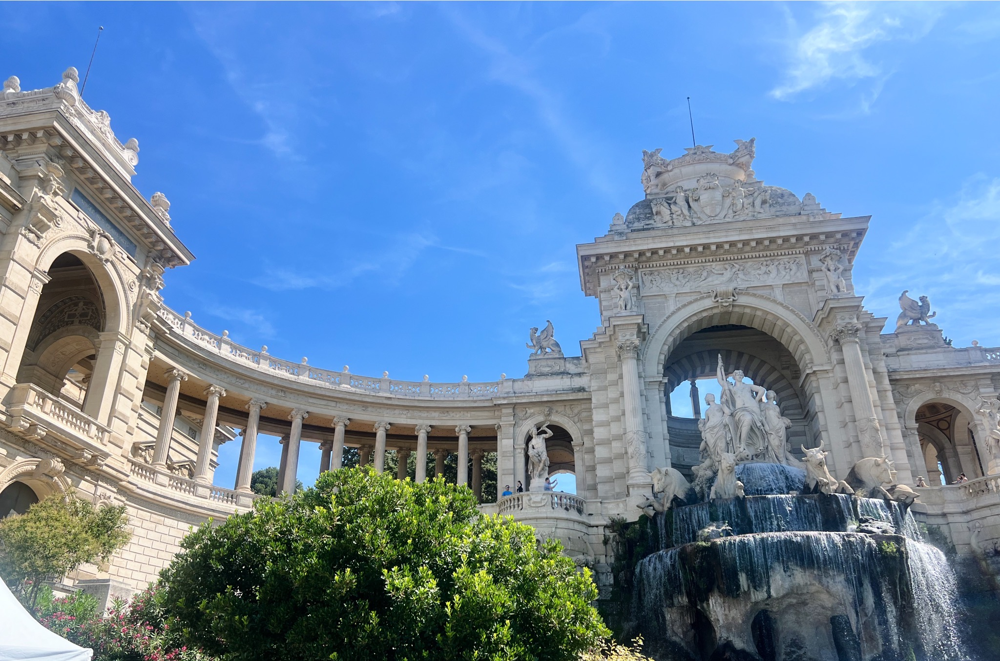

Cassis is a postcard come to life—a small fishing village where pastel-colored buildings curve around a harbor filled with wooden boats, backed by white limestone cliffs that glow in the afternoon sun. It's undeniably beautiful, aggressively charming, and thoroughly aware of both facts. The crowds come for the Calanques (dramatic fjord-like inlets carved into the coastline), stay for lunch at harborside restaurants, and leave with too many photos of the same perfect view.
This is a day-trip destination that's best experienced early or late. Summer brings packed beaches, expensive sun loungers, and restaurants that know they don't need to try very hard. But if you arrive before 10am or after 5pm, you'll find a quieter rhythm—fishermen mending nets, locals drinking pastis, the harbor reflecting the evening light. The Calanques are genuinely spectacular, the local white wine is surprisingly good, and the setting justifies the tourist attention even if the crowds don't.
Gallery





Where to Stay
In Cassis: If you're staying overnight (recommended to avoid the day-trip rush), book well in advance. The town is small with limited accommodations. Harborside hotels offer the best views but charge premium prices. Quieter options exist on the streets leading uphill from the port.
Better option: Stay in Marseille (30 min) or Aix-en-Provence (45 min) and visit Cassis as a day trip. You'll have more accommodation choices, better restaurants, and avoid the tourist-trap pricing. The morning bus or train to Cassis is easy and scenic.
Splurge-worthy: If you're celebrating something, Les Roches Blanches hotel perched on the cliffs offers stunning views and a private pool overlooking the Mediterranean. Expensive but memorable.
Where to Eat
For seafood: Every restaurant along the port serves grilled fish, bouillabaisse, and seafood platters. Quality varies wildly—some are excellent, others are coasting on location. La Poissonnerie and Chez Gilbert have good reputations. Expect to pay €30-50 per person with wine.
For local wine: Cassis produces crisp white wine from vineyards on the surrounding hillsides. It pairs perfectly with seafood and is best enjoyed at a harborside table. Most restaurants carry local bottles—ask for Clos Sainte Magdeleine or Domaine du Bagnol.
Budget option: Skip the harbor restaurants and grab supplies from the small market or boulangerie. Picnic on Plage de la Grande Mer or hike to a Calanque with baguette, cheese, and wine. You'll save money and arguably have a better experience.
For ice cream: Multiple gelato shops along the port. None are remarkable, but sitting with a cone watching boats come and go is a required Cassis activity.
What to Do
Take a Calanques boat tour. This is why you came to Cassis. These dramatic limestone cliffs plunge into turquoise water, creating fjord-like inlets that are stunning from the sea. Most tours visit 3-5 Calanques in 45-90 minutes. Calanque d'En-Vau is the most spectacular—vertical white cliffs, impossibly blue water, tiny pebble beach. Tours leave from the port regularly. Book early in summer.
Hike to the Calanques. If you're fit and prepared, hiking offers a more intimate experience than the boats. The trail from Cassis to Calanque d'En-Vau is tough—rocky, exposed, no shade, about 2.5 hours roundtrip. Bring water, sun protection, and sturdy shoes. The reward is swimming in turquoise water with far fewer people than the beaches.
Beach life. Plage de la Grande Mer is the main beach—pebbly, crowded, with expensive sun loungers. It's fine for a swim but not remarkable. For something quieter, walk to Plage du Bestouan (15 minutes) or take a boat to Calanque beaches.
Visit local vineyards. Several wineries around Cassis offer tastings of the local white wine. Most require advance booking. Clos Sainte Magdeleine has spectacular views over the vineyards and sea. It's a pleasant half-day activity if you have a car.
Walk to Cap Canaille. The highest sea cliff in France (400m) offers panoramic views over Cassis, the coastline, and the Mediterranean. You can drive to the top or hike up. The Route des Crêtes (coastal road) is one of the most scenic drives in Provence.
Sample Itinerary
Half-day visit: Morning boat tour of the Calanques, lunch at harborside restaurant with local white wine, afternoon swim at Plage de la Grande Mer or exploring the port area, return to Marseille or Aix in late afternoon.
Full day: Arrive early, morning hike to Calanque d'En-Vau with picnic supplies, swim and relax, return by early afternoon, late lunch in town, explore Cap Canaille or visit a winery, evening at the harbor before returning.
Overnight stay: Day 1: Afternoon arrival, Calanques boat tour, dinner with sunset views. Day 2: Morning hike or beach, vineyard visit, lunch, departure by afternoon.
A Few of My Favorite Spots
- Calanques boat tours
- Harbor restaurants with local wine
- Hiking to Calanque d'En-Vau
- Cap Canaille viewpoint
- Early morning at the port
Practical Information
Getting there: From Marseille: 30-minute bus or train to Cassis. From Aix-en-Provence: 45-minute bus. Having a car gives you flexibility for vineyards and Cap Canaille, but parking in Cassis is limited and expensive in summer. There's a large parking lot on the edge of town with a 10-minute walk to the port.
When to visit: May-June and September are ideal—warm enough for swimming, not overwhelmingly crowded. July-August brings peak crowds, expensive prices, and parking nightmares. Arrive before 10am or after 5pm to avoid the worst. October is pleasant but some boat tours stop running.
Hiking caution: Calanques trails close during high fire risk (usually July-August). Check with the tourist office or online before planning a hike. The trails are hot, exposed, and rocky—bring at least 2L of water per person and sun protection.
Swimming: Water temperature is comfortable June-September. Calanques beaches are rocky/pebbly—bring water shoes. The turquoise color is real, not edited, and swimming there is memorable.
Crowds: Cassis gets very crowded in summer. Day-trippers from Marseille and cruise ship groups flood in around 11am-4pm. Early morning or evening visits offer a much more pleasant experience.